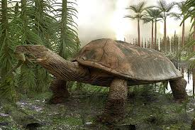

Czym były prehistoryczne żółwie?
Prehistoryczne żółwie to pradawne gatunki, które pojawiły się miliony lat temu i często były ogromnych rozmiarów. Niektóre z nich żyły w czasach dinozaurów, a ich pancerze i struktura kości dostarczały fascynujących informacji o ewolucji tych gadów.
Wybrane prehistoryczne żółwie
-
Archelon
Gigantyczny żółw morski, osiągający długość do 4 metrów. Żył w późnej kredzie, głównie w wodach dzisiejszych Stanów Zjednoczonych.
 Ciekawostka: Jego ogromne szczęki pozwalały mu połykać dużą zdobycz, a mimo olbrzymiego rozmiaru, był bardzo zwrotny w wodzie.
Ciekawostka: Jego ogromne szczęki pozwalały mu połykać dużą zdobycz, a mimo olbrzymiego rozmiaru, był bardzo zwrotny w wodzie.
-
Meiolania
Ogromny, lądowy żółw z Australii i Nowej Gwinei. Charakteryzował się długim ogonem z kolcami i pancernym hełmem.
 Ciekawostka: Był tak duży, że nie miał naturalnych wrogów, a jego kolczasty ogon służył do obrony przed drapieżnikami.
Ciekawostka: Był tak duży, że nie miał naturalnych wrogów, a jego kolczasty ogon służył do obrony przed drapieżnikami. -
Proganochelys
Jedna z najstarszych znanych żółwi, żyjąca około 210 milionów lat temu w późnym triasie. Posiadała częściowo zrośnięty pancerz i kolce na szyi.
 Ciekawostka: Proganochelys nie mogła schować głowy w skorupę, w przeciwieństwie do współczesnych żółwi.
Ciekawostka: Proganochelys nie mogła schować głowy w skorupę, w przeciwieństwie do współczesnych żółwi.
-
Stupendemys
Olbrzymi słodkowodny żółw z Ameryki Południowej, którego skorupa mogła osiągać nawet 3 metry długości.  Ciekawostka: Był jednym z największych żółwi w historii, większym nawet od dzisiejszych żółwi morskich.